The channel, in numbers
Every view/like count below was pulled fresh on 17 Jul 2026 and independently re-pulled by a second agent — the two pulls matched to within live-growth drift. Durations, shot counts and words-per-second were measured off the downloaded files with ffmpeg + the Hindi captions. Nothing is estimated.
| Story | Views | Likes | Length | Shots | Avg shot | Words | W/s |
|---|---|---|---|---|---|---|---|
| Poor corn's Ice Truck vs Bhindi's sabotage | 7.21M | 5.7K | 9:01 | 68 | 8.0s | 1,235 | 2.29 |
| Rickshaw Karela betrayed by wife → millionaire | 4.99M | 7.9K | 8:28 | 63 | 8.1s | 1,028 | 2.03 |
| Lauki dumps poor Mooli for rich Bhindi Part 1 | 3.97M | 7.5K | 5:36 | 41 | 8.2s | 927 | 2.75 |
| Wife leaves poor soup-seller → he's a tycoon | 3.65M | 9.5K | 11:43 | 112 | 6.3s | 2,029 | 2.88 |
| Karela wins despite Bhindi+Aloo conspiracy | 3.28M | 5.7K | 8:52 | 60 | 8.9s | 1,300 | 2.44 |
| Aloo abandons wife & son for rich Bhindi | 2.73M | 5.5K | 6:22 | 51 | 7.5s | 822 | 2.14 |
| Potato cheats with boss's daughter Tomato | 1.23M | 2.7K | 5:16 | 37 | 8.5s | 908 | 2.88 |
| Bhindi dumps poor Karela for rich Baigan (AC) | 834.7K | 1.1K | 5:04 | 35 | 8.7s | 814 | 2.67 |
| Uncle Potato's water-park miracle (eco fable) | 459.9K | 708 | 5:58 | 44 | 8.1s | 900 | 2.50 |
| Tomato & Okra steal Corn's magic seed 😨 newest | 124.3K | 245 | 9:55 | 63 | 9.4s | 1,716 | 2.89 |
| Poor Gajar & the unfaithful Tamatar | 84.5K | 401 | 3:45 | 22 | 10.2s | 568 | 2.51 |
| Aloo betrays Kaddu (friendship gossip) | 30.0K | 146 | 4:54 | 32 | 9.2s | 494 | 1.70 |
| Cabbage abandons his parents for a Strawberry | 6.1K | 50 | 3:38 | 27 | 8.1s | 600 | 2.75 |
▎ green = 2M+ hit · ▎ red = flop (under 130K). Sorted by views.
The single clearest signal: longer wins
Sort their 13 videos into three runtime buckets and the pattern is almost binary. This is the strongest correlation in the whole dataset — and it directly backs the 8:28–13:32 breakout band we already target.
| Runtime bucket | Videos | Avg views | Verdict |
|---|---|---|---|
| Under 5 min | 3 | 40K | All three are flops. No exceptions. |
| 5–8 min | 5 | 1.84M | Reliable base hits. |
| 8–12 min | 5 | 3.85M | Every mega-hit lives here. |
The story engine — one spine, run 13 times
Strip the sabzi names off and every hit is the same machine. This is the template, in the order it plays.
- A sympathetic POOR hero, established in one shot.A rickshaw-puller, a soup-seller, a fisherman, a jobless husband. Poverty is shown physically (sweating, hauling, counting coins) so we side with them before anyone speaks. Wealth is always the corrupting force — never the reward for villainy.
- Wealth arrives as a branded prop and detonates the plot.The inciting incident in nearly every video is a luxury vehicle rolling into a poor village — a Mercedes, a Rolls, a helicopter, a Lamborghini. It's the same beat every time: the shiny thing shows up, and someone's head gets turned.
- The betrayal — someone trades love for money.A wife runs off with a rich man; a husband is seduced by his rich boss; a best friend and a wife conspire to steal the business; a son ditches his parents. Flavours vary — a fake-affair frame (Ice Truck), a CCTV sabotage mystery (Cooling Dhaba), a child left crying (fisherman) — but the engine is always money-vs-loyalty.
- A held, tear-streaked close-up at the low point.Every single video parks on one big watery-eyed veg face at its darkest moment. This shot is doing double duty — it's the emotional peak and it's the thumbnail frame.
- Karma, delivered and stated out loud.The greedy one is punished (banished by the panchayat, dumped by the man she left for, left washing dishes at a dhaba); the honest one is rewarded (made a manager, a restaurant tycoon). Then a narrator says the moral aloud so even a half-watching viewer gets the payoff — "मेहनत कभी धोखा नहीं देती" (hard work never betrays you).
- End on justice, a reunion, or a "Part 2" cliffhanger.Three endings recur: clean justice (villain exposed), warm reunion (family forgives), or a deliberate cliffhanger — the Lauki video literally freezes on "असली तूफान अभी बाकी था" (the real storm was yet to come) and cuts to a like/subscribe-for-Part-2 card. They serialise the longer stories on purpose.
Voice model — they are narrator-led, and it's a decision we should revisit
This is the finding that pushes against our own current plan, so I measured it carefully across all 13.
- One voice actor carries the whole film. The narrator drives every montage and time-jump with stock connectors — धीरे-धीरे… (slowly…), अगले ही दिन… (the very next day…), कुछ दिन बीत गए (some days passed) — so limited animation can stretch to 6–12 minutes with no lip-sync burden.
- Dialogue is reserved for the punches. Characters speak only at the high-emotion beats: the villain's taunt "गरीब आदमी आखिर गरीब ही रहता है" (a poor man stays poor in the end), the betrayal line, the child's "पापा, हमें छोड़कर मत जाओ" (Papa, don't leave us).
- Narration share scales with length. The shortest / most dialogue-driven hit (the fisherman, 6:22) runs ~45% narration; the montage-heavy ones climb to ~65–70%. More narration = more story compressed per minute = the longer runtimes that win.
- They still peak on dialogue. The narrator is the connective tissue; the emotional gut-punches are always a spoken line over a held face. It's a hybrid, weighted toward narration — not a pure storybook read.
Art & character design — the "looks"
One rigidly consistent art system across all 13 videos. This is exactly reproducible.
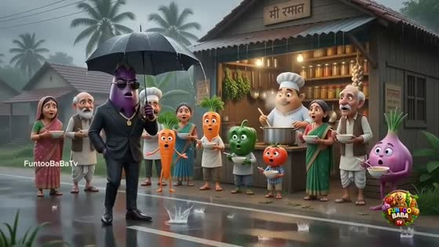
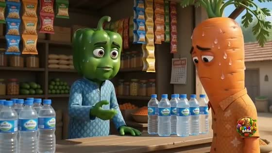
- Single vegetable HEAD on a full HUMAN body.Never a full-vegetable body, never a mask. One clean vegetable head — corn, potato, okra, radish, brinjal — sitting on a normal clothed human body with human hands. This is the hybrid we already switched to; they confirm it's the whole field's standard.
- Leaves / husk / stem = the hair.Carrot's green top, corn's husk, the radish's pink greens, the tomato's calyx crown — the plant's own foliage is styled as hair. It's what makes each head read as a character and not a produce-aisle photo.
- Cute Pixar-grade 3D — deliberately NOT photoreal.Glossy, saturated, big-eyed, expressive — Disney/Pixar animation, not a photoreal render. Cartoon-human faces (lashes, bindi, blush, streaming tears) mapped onto the veg head. This is the opposite of the photoreal direction we set for Story 12+ — and it's what's winning.
- Clothing upgrades with status.The same character goes plaid-shirt villager → designer suit + sunglasses + gold chain as they rise or fall. Wardrobe is how they show the arc without a word.
- Village-warm vs City-cool colour coding.Home/virtue = warm golden mud-house village, palms, dusty roads. Temptation/corruption = cool neon-blue glass-tower city with luxury brand storefronts (Gucci, Prada, Vogue, Rolex), real landmarks (India Gate, Charminar, Marine Drive). The palette itself tells you who's good.
- Un-rippable double branding on every frame.A "FuntooBaBaTv" text mark bottom-left and a round colourful logo badge bottom-right — on every single shot. No generator watermark ever shows. (We do the same with our animated badge.)
Thumbnails — a staged spoiler, never a portrait
Their thumbnails are the clearest lever in the dataset: the winners' thumbnails all follow one formula, and the flops all break it. This is the whole channel's thumbnails, sorted by views.
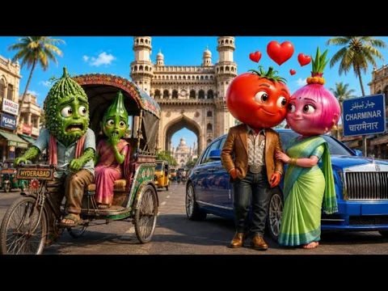
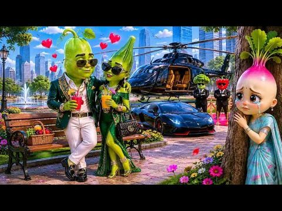
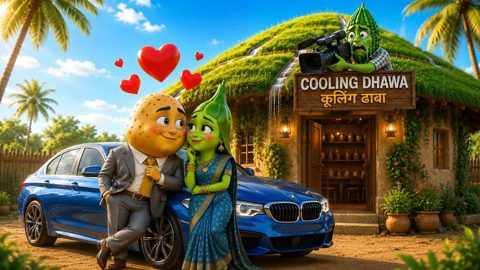
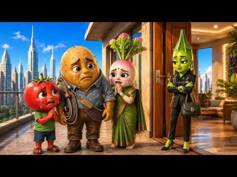
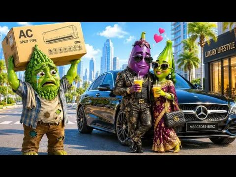
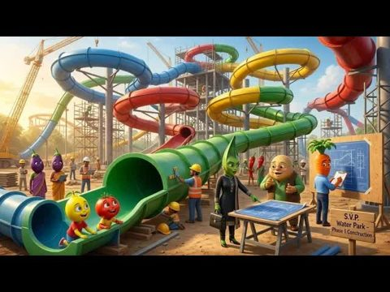
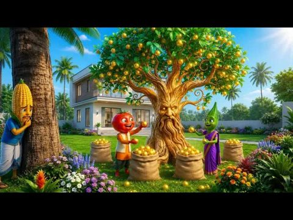
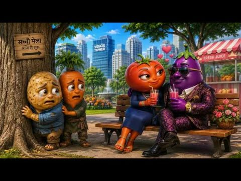
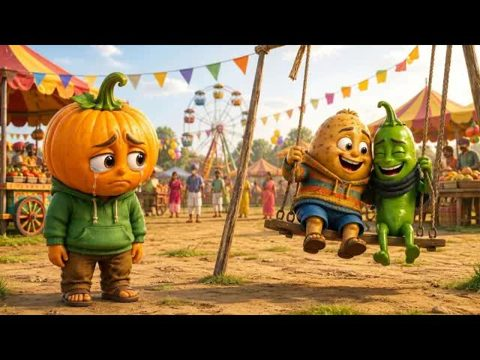
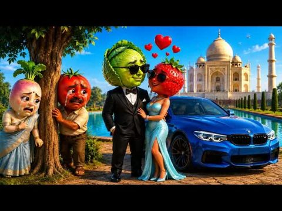
- A staged confrontation scene, 3–4 characters mid-drama — never a lone portrait.
- One clear branded wealth prop: a luxury car, a helicopter, a penthouse, a building.
- One emotional signal: floating red hearts (a love-triangle) or tears.
- Warm-vs-cold staging: the poor/crying side against the rich/smug side.
- Little or no title text — in-scene signage does the talking; the picture over-tells the story on purpose.
- Tiny faces and 6+ elements fighting for attention (the 6K dud).
- Unreadable stakes — three kids on a swing; you can't tell who wronged whom (the 30K).
- Low silhouette contrast — a green cabbage head lost against a dark tux.
- No money / no romance / no clear villain — the busy water-park build (460K, their lowest "hit").
All 13, video by video
Each with its real storyline (read off the Hindi caption), its cast, and the one thing it teaches. Winners first.
Poor corn's Ice Truck — the framed husband who wins
7.21M views · 9:01 · 68 shots · ~55% narration
Corn sees the poor priced out of water in a heatwave, sells his wedding ring to buy a truck and sell cheap ice. Jealous rich shopkeeper Lauki Seth fakes affair photos of corn with Mooli, so wife Bhindi believes it and leaves; Lauki sabotages the truck. Bhindi secretly records Lauki's men confessing, the panchayat banishes him, the couple reunites, business bigger than ever.
Karela the rickshaw-puller → millionaire manager
4.99M views · 8:28 · 63 shots · ~65% narration
Poor Karela gives his whole day's earnings to save a fainted rich Bhindi; she rewards him with a city job. City glamour corrupts his wife Onion, who's seduced away by rich Tomato — who then dumps her. Karela's honesty earns him the manager's chair; the wife is left regretting. Bittersweet: hero rises, betrayer punished, no reunion.
Lauki leaves loyal Mooli for rich Bhindi Part 1
3.97M views · 5:36 · 41 shots · ~60% narration
Poor-but-in-love farmer Lauki is dazzled when a helicopter-riding rich businesswoman Bhindi singles him out. One designer-suit temptation at a time he goes cold on devoted wife Mooli and leaves for the city. Ends unresolved on "असली तूफान अभी बाकी था" and a hard like/subscribe-for-Part-2 card.
The soup-seller's revenge (their longest, 11:43)
3.65M views · 11:43 · 112 shots · ~50% narration · fastest cuts (6.3s)
Beloved chicken-soup vendor Aloo is mocked by rich Baingan, who then seduces away wife Mooli. Aloo pours his grief into his craft; a city businesswoman Bhindi makes him a restaurant tycoon while Mooli ends up washing dishes at a roadside dhaba. Explicit karma, moralised aloud.
The Cooling Dhaba — double betrayal + a CCTV mystery
3.28M views · 8:52 · 60 shots · ~60% narration
Mocked, jobless Karela builds a hit AC-free "cooling" restaurant. His jealous wife Bhindi secretly sabotages it; CCTV exposes her. Then he overhears his "best friend" Aloo plotting with her to steal the business — "कूलिंग ढाबा हमारा हो जाएगा". He plays them the tape and throws both out; the dhaba becomes a resort.
Aloo comes home — fisherman abandons wife & son
2.73M views · 6:22 · 51 shots · ~45% narration (most dialogue-led hit)
Poor fisherman Aloo is hired and seduced by rich company-owner Bhindi, abandons wife Mooli and his young son Tamatar — the son's "पापा, हमें छोड़कर मत जाओ" is the gut-punch. Bhindi later dumps Aloo for another man; ruined, he returns and the family forgives him. Warm reunion ending.
Potato cheats with the boss's daughter Tomato
1.23M views · 5:16 · 37 shots · ~70% narration
Married corporate Aloo dumps his simple village wife Bhindi for his boss's glamorous foreign-returned daughter Tomato, is used and discarded when the money runs out, and crawls back to beg forgiveness. The most universally legible love-triangle of the set — and their strongest mid-tier performer.
Bhindi leaves poor Karela for rich Baigan (the AC story)
834K views · 5:04 · 35 shots · ~65% narration
In a heatwave, auto-driver Karela can't afford an AC, so wife Bhindi runs off with rich Baigan and his cold Mercedes — then regrets it. Karela sells his auto to buy the AC; she refuses it and asks him to get his livelihood back. Clever "AC = love" metaphor and a fresh sacrifice-twist ending.
Uncle Potato's water-park miracle (eco fable)
460K views · 5:58 · 44 shots · ~55% narration
Elder Aloo Chacha builds a fantasy "Cooling Kingdom" water park to save the kids' summer, hits a water crisis, and solves it with rainwater harvesting. Wholesome, colourful, kid-safe — but no betrayal, no villain, no romance, which is exactly why it's the lowest of their "hits".
Corn's magic seed 😨 (genre departure — newest)
124K views · 9:55 · 63 shots · ~55% narration
Corn finds a magic seed that grows a golden-fruit tree; his greedy brother Tomato steals it and is punished by a forest guardian, then forgiven. Titled "terrifying 😨" but delivers a mild greed-morality fable. Magic/horror instead of human melodrama, plus 30+ seconds of plowing before the hook — genre gamble that hasn't paid (yet).
Poor Gajar & the unfaithful Tamatar
84K views · 3:45 · 22 shots · ~65% narration
Carrot's wife Tomato elopes with rich Eggplant, gets abandoned, and is taken back by her forgiving husband. Right engine — but too short (3:45), a mid-video subscribe plea dropped at the emotional peak, a visible blurred/mosaic glitch frame, and an off-model villain.
Aloo betrays Kaddu (friendship gossip)
30K views · 4:54 · 32 shots · ~50% narration
A jealous Chili spreads lies to break up best friends Pumpkin and Potato; the truth comes out and they reconcile. Low-stakes friendship misunderstanding — no money, no romance, no family. Title/content mismatch (Aloo doesn't really betray anyone). Opens on everyone being happy — zero hook. 1.70 w/s = long dead-air stretches.
Cabbage abandons his parents for a Strawberry 6K — biggest dud
6.1K views · 3:38 · 27 shots · ~75% narration
Poor parents mortgage their home to make son Cabbage a doctor; he ditches them for glamorous wife Strawberry, she leaves him broke, he returns repentant. Older-skewing "ungrateful son" morality tale, 75% narration (tell-don't-show), the muddiest art of the batch, a ghosting glitch, a cluttered low-contrast thumbnail, and a rushed 3:38 with an abrupt ending.
Why their flops flopped — our "avoid" list
The four under-130K videos share a tight cluster of mistakes. Every one is avoidable.
- No cold-open hook.All four open on slow "once upon a time" narration or small-talk — a farmer plowing, a family being introduced, everyone being happy. None front-loads the shock/betrayal/money image in the first 3–5 seconds, which is exactly where the swipe-away decision is made.
- Over-narration / tell-don't-show.The 6K dud is ~75% narrator reciting the plot; the 30K runs on dead music at 1.70 w/s. When the narrator describes the drama instead of letting characters emote it at the peak, immersion collapses.
- Off the betrayal engine.The further from money-driven infidelity / poor-vs-rich / clear-villain melodrama, the worse it did: friendship-gossip (30K), abandon-your-parents (6K), magic/horror fantasy (124K). Their reliable spine is emotional betrayal over wealth — every departure underperformed.
- Weak, cluttered, portrait-y thumbnails.Tiny faces, 6+ competing elements, unreadable stakes, low silhouette contrast. If a viewer can't read "who wronged whom" in one glance, they don't click.
- Visible AI-slop seams.Blurred/mosaic frames, ghosting, colour-drift characters, off-model leads. The mega-hits protect design consistency; the flops let the cracks show and read as cheap.
- Runtime mis-tuned at both ends.Under 5 minutes rushes the payoff (3:38 with an abrupt ending); bloating a thin plot to 9:55 drags retention. The sweet spot is 8–12 minutes of stacked beats.
- An immersion-breaking mid-video CTA.The 84K dud drops "जल्दी से लाइक और सब्सक्राइब कर दो" at the emotional climax — killing retention exactly where the viewer was hooked. Put the CTA at a breath, or bake it into the ending/cliffhanger.
What we take into our scripts
The point of the whole teardown. Each item is a concrete change for the next batch of scripts — what to keep doing, and what to reconsider. Green is the new/confirmed rule.
- 1 · Open ON the conflict — kill the "once upon a time" intro. Was: our scripts (and their flops) open on setup narration — establishing the village, the family, the weather. Now: the first shot is already mid-crisis, and the first spoken line is a hook — a price shock, a taunt, a threat, a luxury car pulling up. Plant the injustice the hero will fix inside the first 10 seconds. Every one of their 2M+ hits does this; every flop doesn't.
- 2 · Reconsider narrator-led vs dialogue-led (open decision for Shilpi/Dominic). Was: our Story-12 decision commits to dialogue-dominant with per-character Veo lip-sync (from the Vegetables World read). Now: the #1 channel in our niche wins at 28.6M views on a narrator-led hybrid (~50–70% storyteller VO + dialogue only at the peaks). It's cheaper (one voice actor, minimal lip-sync), it survives Veo's dialogue refusals, and it compresses more story per minute. Recommend we test one script the Funtoo way — narrator carries the plot, characters speak only the taunt/betrayal/reveal lines — and A/B it. This is a decision for you two, not one I'll flip unilaterally.
- 3 · Build every story on the money-betrayal-karma spine. Keep & sharpen: sympathetic poor hero → a branded luxury prop detonates the plot → someone trades love for money → held teary close-up at the low point → karma delivered and stated aloud → end on justice, reunion, or a Part-2 cliffhanger. Wealth is always the corrupter. Steer away from friendship-gossip, abandon-parents, and magic/horror — every Funtoo departure from this spine underperformed.
- 4 · Lengthen by stacking beats, not by holding shots. Was: our re-shoots grew runtime partly by lengthening shots and padding. Now: target 8–12 minutes and earn it with more beats + more words + faster cuts. Their 11:43 champion cuts fastest (6.3s/shot) and is densest (2.88 w/s). Under 5 minutes is a proven dead zone here — all three sub-5-min videos flopped.
- 5 · Art: cute Pixar 3D, not photoreal — hold consistency like a hawk. Was: Story 12+ direction is photoreal veg-head-on-human-body. Now: the winning look is glossy CUTE Pixar-style veg-head-on-human-body — big expressive eyes, leaves-as-hair, human faces/hands, Indian dress that upgrades with status. Worth revisiting the photoreal call. And whatever the style, protect design consistency — the flops are where colour-drift, glitch frames and off-model leads show; that's the "slop" tell.
- 6 · Colour-code virtue vs temptation. Adopt: warm golden mud-house village = home/virtue; cool neon-blue glass-tower city + luxury brands/landmarks (India Gate, Charminar, Merc/BMW/Lambo) = temptation/corruption. The palette itself tells the moral, and the wealth props double as thumbnail bait.
- 7 · Thumbnail = staged spoiler tableau (this matches our Playbook 2.0 — enforce it). Keep & enforce: 3–4 characters mid-drama, one branded wealth prop, one emotion signal (floating red hearts OR tears), warm-vs-cold poor↔rich staging, minimal title text. Never a lone portrait. Their flop thumbnails break exactly the rules our thumbnail playbook already sets — so this is confirmation, not a change: it's the biggest single CTR lever they have.
- 8 · Use a recurring "veg-actor troupe," recast by role. Adopt: Funtoo keeps a fixed cast of designs (Aloo, Bhindi, Karela, Mooli, Baingan…) and recasts them each video — Aloo is a hero one week and a betrayer the next; Bhindi is a wronged wife or a rich seductress. Same locked looks = brand recognition + reusable render refs. We should lock a house troupe of ~8 veg designs and rotate their roles.
- 9 · Lean on the seasonal / tangible hook. Adopt: four of their biggest are heatwave stories wrapped around a concrete business idea (ice truck, AC, cooling dhaba, water park). Seasonal + physically-relatable + a novel prop = a hook and a thumbnail in one. Bank a few season-pegged concepts.
- 10 · Fix the CTA placement + the title. Adopt: never interrupt the emotional peak with a like/subscribe plea (their 84K dud's mistake) — put it at a breath or fold it into a Part-2 cliffhanger. And note their titles fully spoil the plot; that's their weakest habit — we can beat them with a curiosity-gap title (our title formula already does this).
Open questions for you two
- Do we test the narrator-led model? One script written the Funtoo way — storyteller VO carries the plot, characters speak only the peaks — rendered head-to-head against a dialogue-led one. This is the biggest strategic question the teardown raises.
- Photoreal or cute Pixar for the art? Their look is deliberately cute/stylised, not photoreal, and it's winning. Do we revisit the Story-12 photoreal direction, or hold it and differentiate?
- Do we serialise? Their 3.97M Lauki video is an explicit "Part 1" with a subscribe-for-Part-2 card. Same serialisation lever we flagged for Facebook — worth running on YouTube long-form too?
- Which concept first? Given the season, a heatwave-pegged story (our own ice-truck / cooling-business spin) is the highest-confidence next script. Want me to draft it on the winning template?